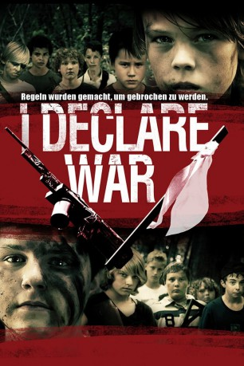

#3808 I Declare War
 
 IMDB-Wertung: 6.0 / 10
IMDB-Wertung: 6.0 / 10  Metascore: 0
Metascore: 0 
Der 12-jährige PK und seine Freunde spielen nach der Schule regelmäßig „Capture the Flag“ im nahegelegenen Wald. In der Fantasie der Kinder gewinnt das harmlose Kriegsspiel an Realismus: Stöcke werden zu Gewehren, Wasserbomben zu Granaten und das einfache, aber strenge Regelwerk läßt die Opfer „sterben“ und somit aus dem Spiel ausscheiden. Doch an einem Nachmittag verliert Skinner, einer von PKs Gegnern auf dem Schlachtfeld, die Kontrolle. Er reißt das Kommando über seinen Trupp an sich und nimmt PKs besten Freund Kwon als Kriegsgefangenen. Als verschiedene Befreiungsversuche scheitern, droht das unschuldige Kinderspiel zu eskalieren, denn für Skinner ist das Spiel schon lange keines mehr. Doch auch PKs Vorgehensweise nimmt immer gefährlichere Ausmaße an.
Jahr: 2012
Dauer: 93 Minuten
FSK: 16
Land: Kanada Studio: OFDb FilmworksTonspuren: DTS - ,
Untertitel:
Auflösung: 1080p (1920x816) Größe: 5765 MB
Genre: Action, Drama, Komödie
Regisseur: Jason Lapeyre, Robert Wilson
Drehbuch: Petter Skavlan
Soundtrack:
Darsteller:
- Siam Yu als Paul Kwon
- Gage Munroe als P.K. Sullivan
- Michael Friend als Jamie Skinner
- Aidan Gouveia als Quinn Wilson
- Mackenzie Munro als Jessica Dobrzanski
- Alex Cardillo als Roy Frost
- Kolton Stewart als Caleb
- Eric Hanson als Kenney
- Alex Wall als Scott
- Patrick Mölleken als Skinner
- Dyson Fyke als Trevor Sikorski
- Spencer Howes als Albert Washington aka Joker
- Andy Reid als Wesley Bishop
- Richard Nguyen als Kevin
- Houston als Shadow
Datei: X:\2012(G-M)\I Declare War (2012, FSK16, 1920x816).mkv seit 14.06.2016
Festplatte: HD 2012(A-M)
 Es gibt insgesamt 112 Filme in der Gruppe '2012(G-M)'
Es gibt insgesamt 112 Filme in der Gruppe '2012(G-M)'